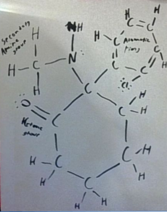

Lewis Dot Diagram:
(±)-2-(2-Chlorophenyl)-2-(methylamino)cyclohexanone
Ketamine, developed in the 1960s, is a dissociative anesthetic initially synthesized as an alternative to phencyclidine (PCP), which had undesirable side effects. Approved for medical use in 1970, ketamine was first utilized as a safer anesthetic during the Vietnam War, thanks to its rapid onset, reliable sedation, and minimal suppression of breathing (Jansen, 2001).
Unlike traditional anesthetics, ketamine induces a trance-like state with pain relief, sedation, and memory loss, making it an essential tool in emergency and battlefield medicine. Beyond its anesthetic properties, ketamine's relevance has expanded into psychiatry and neuroscience. In recent decades, it has been recognized for its rapid-acting antidepressant effects, particularly in treatment-resistant depression and suicidal ideation. Unlike conventional antidepressants, which may take weeks to show efficacy, ketamine can alleviate symptoms within hours, offering hope for patients in acute crises (Krystal et al., 2019).
Ketamine’s mechanism of action, as an NMDA receptor antagonist, disrupts glutamate signaling, which plays a role in mood regulation and synaptic plasticity. Additionally, low-dose ketamine infusions are being studied for chronic pain conditions, including complex regional pain syndrome (CRPS) and fibromyalgia. Its off-label use for other psychiatric disorders, such as PTSD and anxiety, is also being investigated.
Despite its medical benefits, ketamine has a controversial side due to its potential for abuse as a recreational drug, known as "Special K," which can lead to dependence, cognitive impairments, and bladder toxicity. As research continues, ketamine remains a critical yet complex tool in both medicine and neuroscience, balancing its therapeutic potential with the risks of misuse and adverse effects.